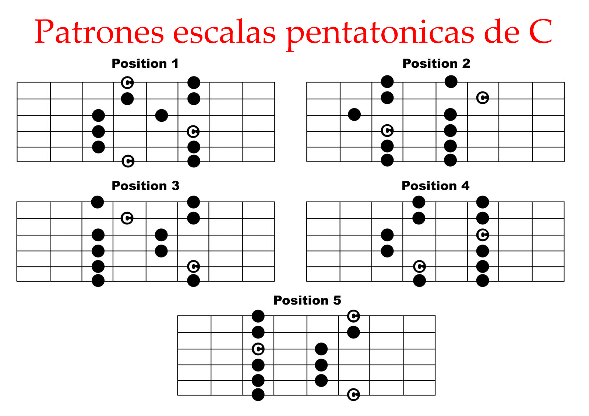

La escala pentatónica es una de las muchos tipos de escalas que existen en el mundo de la música. El prefijo “pen” indica que se compone de un total de cinco notas. Este tipo de escala se suele emplear para tocar guitarra así como los tambores. Por otra parte está fuertemente relacionada con géneros como el blues, jazz, R&B, rock n ‘roll, country, reggae, folk, hip hop y en el metal. El éxito de lograr una composición musical bien lograda es utilizar esta escala en equilibrio
La escala mayor se compone de un total de 7 notas, la construcción de una escala pentatónica se basa en la elección de 5 a partir de esas. Se ha hecho común el uso de estas escalas debido a que cuando se reproducen generan una melodía agradable independientemente de si es mayor o menor. Además, resulta más simple de ejecutar ya que se memoriza con más rapidez y permite la improvisación.
La función que cumplen al momento de componer música es que se pueden tocar al saltar las notas, realizar repeticiones o también al añadir notas que no forman parte de la escala original con el fin de crear riffs o melodías. Por ejemplo, se puede agregar un grado a la segunda escala. Pasar de tercer al quinto natural que está en la escala pentatónica principal es un recurso que los intérpretes de blues suelen hacer.
